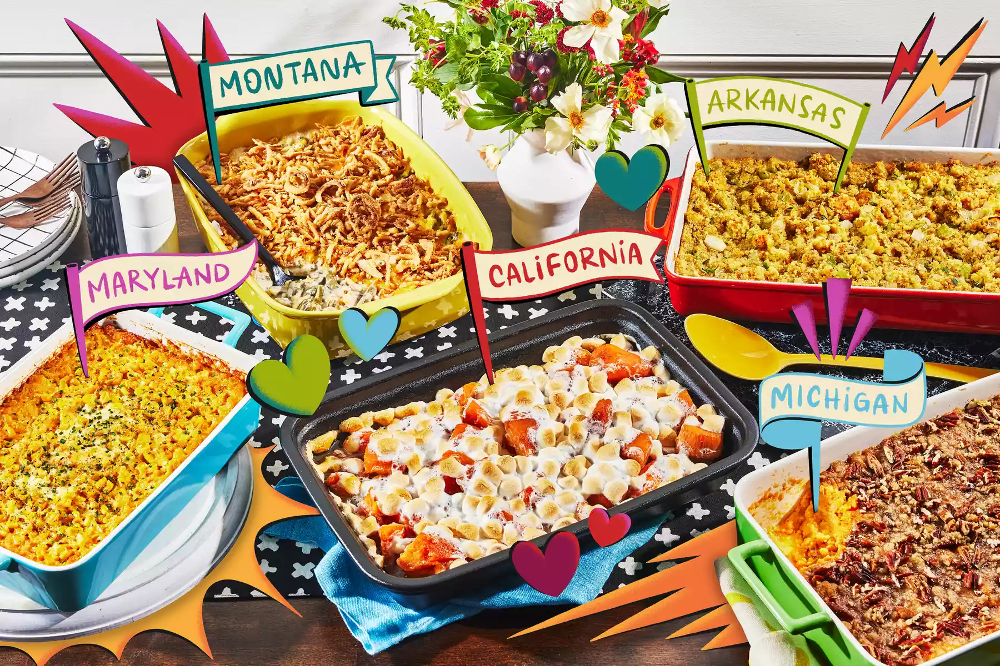

Odin Recipes

Description
Ingredients
- 2 (14.5 ounce) cans stewed tomatoes
- 3 cups water
- 2 cups beef broth
- 1 cup fresh lima beans
- 1 cup frozen corn kernels
- 1 cup sliced carrots
- 2 tablespoons chopped onion
- 2 tablespoons Old Bay Seasoning TM
- 1 gallon water
- 10 blue crab claws, steamed (Optional)
- 1 pound blue crab crabmeat/
Steps
- Gather all ingredients.
-
Place stewed tomatoes, 3 cups water, beef broth, lima beans, corn,
sliced carrots, chopped onion, and Old Bay seasoning in a 4-quart pot.
- Bring to a simmer over medium heat; cover and cook for 5 minutes.
-
Bring 1 gallon water to a boil in a large pot. Add crab claws and boil
for 6 minutes; drain.
-
Stir crabmeat and boiled crab claws into tomato and vegetable mixture.
Cover and simmer for 10 to 15 minutes.
- Serve hot.